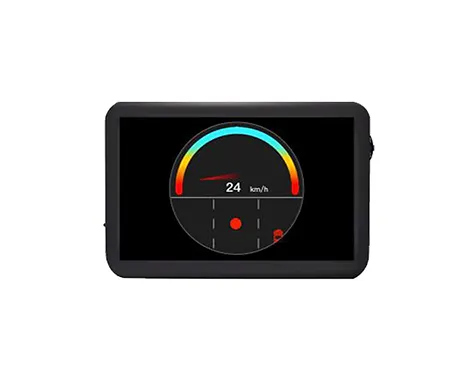
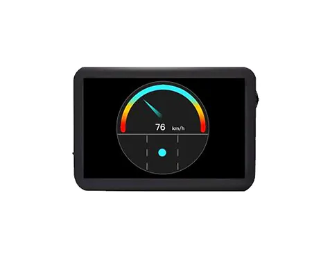
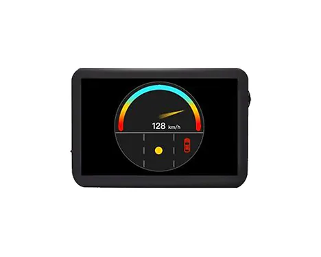
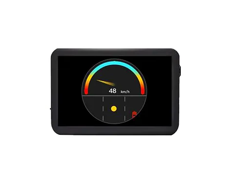

图形用户界面专利GUI Patent
项目说明按旧站英文原文保留；时间与个人介绍反映当时的作品集记录。Original portfolio text is preserved in English. Dates and biographical information reflect the archived portfolio; see the academic homepage for current information.
Graphic User Interface (GUI) Patent - assistive vehicular display with lane-changing information for the driving safety
(05.2018)





the front view of Design 4
the front view of Design 1
the front view of Design 5
the front view of Design 2
the front view of Design 3
Design 1:
The left graphic user interface shows for example that drivers can change lane in corresponding scenarios and no other vehicles impact lane changing on the target lane. The blue needle indicates to keep the speed in the range of the blue speed bar. The blue dot shows that the current state is safe.
Design 2:
The graphic user interface shows drivers can change lane by accelerating. The vehicles at the right-rear impact lane-changing on the target lane; the yellow needle indicates it is insecure speed within the range of yellow speed bar, suggesting accelerating; the yellow dot shows that the driving car is in the insecure state, the red vehicle indicates it is dangerous on the lane-changing target lane.
Design 3:
The graphic user interface shows drivers cannot change lane in corresponding scenarios, suggesting accelerating. The vehicle at the right-rear impact lane-changing on the target lane; the red needle indicates it is dangerous within the range of red speed bar, suggesting accelerating; the red dot shows the driving car is in the dangerous state, the red vehicle indicates it is dangerous on the lane-changing target lane.
Design 4:
The graphic user interface shows drivers can change lane by decelerating. The vehicle at the right-front impact lane-changing on the target lane; the yellow needle indicates it is insecure speed within the range of yellow speed bar, suggesting decelerating; the yellow dot shows that the driving car is in the insecure state, the red vehicle indicates it is dangerous on the lane-changing target lane.
Design 5:
The graphic user interface shows drivers cannot change lane in corresponding scenarios, suggesting decelerating. The vehicle at the right-front impact lane-changing on the target lane; the red needle indicates it is dangerous within the range of red speed bar, suggesting decelerating; the red dot shows the driving car is in the dangerous state, the red vehicle indicates it is dangerous on the lane-changing target lane.
Team: Fang You, Yang Li, Chenxi Jin, Yujia Wang, Jianmin Wang. May 11, 2018. Graphic User Interface (GUI) Patent - assistive vehicular display with lane-changing information for the driving safetyPatent number: CN304624709S